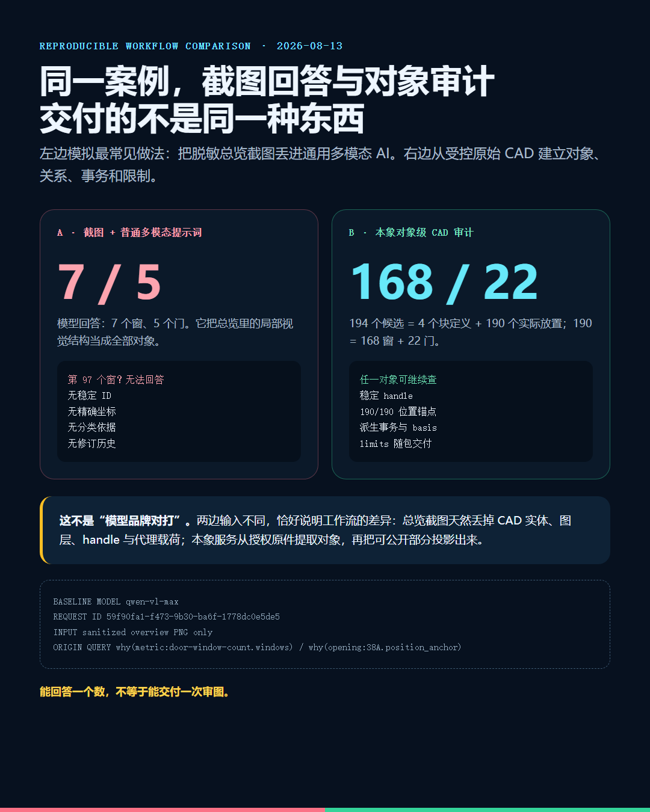

同一份复杂 CAD，通用多模态 AI 只看脱敏总览截图，回答“7 个窗、5 个门”；对象级审计从受控原件得到 168 个窗、22 个门，并让 190 个实际对象逐个回图。差异不在谁更会聊天，而在客户最后拿到什么。
/ / /
我把复杂 CAD 的脱敏总览图交给 qwen-vl-max，问题写得很普通：
图中实际放置的窗和门各有多少？第 97 个窗的稳定对象 ID、精确位置坐标和分类依据是什么？
模型回答：7 个窗，5 个门。
再问第 97 个窗，它明确说无法回答——截图里没有编号、属性标签、坐标系统，也没有原始 DWG/DXF 的实体属性。
这次运行不是编的。模型、提示词、token 用量和 request ID 都保存了：
model qwen-vl-max request_id 59f90fa1-f473-9b30-ba6f-1778dc0e5de5 input sanitized overview PNG only answer windows=7, doors=5 object #97 unavailable
我原来担心它会瞎编一个坐标。好在没有。它诚实承认：要拿对象 ID 和坐标，必须读取原始 CAD 实体。
问题也正在这里。多数“AI 看懂 CAD”的演示，只给 AI 一张图。客户要的却不是一段看图感想，而是一份可以拿去复核的工程结果。

截图式AI与本象对象级审计的可复现对比
先说清楚：这不是模型排行榜。两边输入本来就不同。
左边是最常见的聊天框工作流——截图加普通提示词。右边是 CAD 审计工作流——在客户授权环境里读取原件，恢复对象、关系和证据，再生成脱敏投影。
输入不同，不是实验瑕疵，恰好是我们要说的差异：总览截图在导出那一刻，已经丢掉了 handle、图层、代理载荷、块归属和大量几何信息。再强的模型，也不能稳定恢复一份从未给它的数据。
/ / /
/ / /
受控原始 DWG 里，离线流程找到了 194 个 TCH_OPENING：
194 = 4 个块定义模板 + 190 个实际放置对象 190 = 168 个窗 + 22 个门 + 0 个未分类
如果只把结果写成 windows=168，其实和聊天框没拉开多少距离。数字看着更准，交付仍然很薄。
本象协议保留了 168 个窗和 22 个门背后的独立对象。每个对象有稳定 ID、所属关系、分类依据、载荷指纹和位置证据。190 个实际对象，190/190 恢复了位置锚点。
190个门窗对象落回脱敏基础几何
客户说“你可能多算了一樘”，我们不需要重新截屏问一次 AI。可以直接查：
origin why cases/cad-window-audit.origin \ opening:38A.position_anchor
结果会返回坐标、写入者 tch-opening-anchor-decoder、事务 ID 和 basis。换句话说，系统不是知道“有 168 个”，而是知道这 168 个分别是谁。

单个opening对象的坐标、证据与查询命令
这就是普通截图式 AI 和对象级审计的第一条硬差异：
截图式 AI 给答案；对象级审计交对象。答案可以复制，对象可以继续查。
当然，当前案例也没把所有事做完。limits.json 明写着：168 的单位是窗樘/窗洞对象，不是玻璃片；GNU LibreDWG 独立确认的是候选总数 194，不是 168/22 分类；精确轮廓、朝向和 bbox 尚未恢复。
讲真，这几句对接单不算讨喜。但工程客户迟早会问。等出事再说，成本更高。
/ / /
/ / /
很多 AI 项目交付完，只剩一份 PDF 和一段聊天记录。模型换了，会话清了，项目重新失忆。
我们的 CAD 审计包至少保留六类内容：

客户实际收到的CAD对象级审计包
交付可以是 HTML、PDF、CSV、JSON 和 .origin。人看报告，机器查对象，后续修订继续沿用同一套身份和证据。
这才是我们愿意承接 CAD AI 任务的原因：不是承诺第一次回答永远正确，而是把复核、纠错和重审做进交付物。
/ / /
/ / /
第二个案例来自 City of San Diego 官方页面的 DS-3179 Construction Plan DXF 模板。不是我们画的测试夹具。
导入结果：187 个对象、319 条关系、10/10 条机器约束可判定。系统识别了 inch 单位、9 个页索引、7 项引用标准，以及 NAME OF COMPANY、SITE ADDRESS 等待填写字段。

美国官方DXF完整原图与本象对象级验真证据
这里补一条更正。上一版验真页把 DXF 块参照画成了外接框，又把多行 CAD 文字按单行 SVG 排版，于是页面看上去只有重叠英文。源文件没有拿错，是可视投影器没把原图画完整。现在已经换成源 DXF 的 Model Space 直接渲染：完整图框、Sheet Index、施工变更表、Street Data Table 和官方图签都在。证据数据正确，不代表宣传截图就可以含糊；截图也必须接受验真。
这里的价值不是“AI 能读英文”。OCR 早就能读。
价值是每个 Sheet Index 条目、Governing Reference 和待填字段都保留源对象关系；一句“已读懂模板结构”的结论，可以反查它依据了哪些对象、由哪次事务产生。
所以，我们可以承接国内外这些任务：

国内外CAD图纸AI审计的承接范围
但这句话必须钉住：本象工程验真不是 AHJ 批准，也不是建筑师或 PE 盖章。 ICC 模型规范要由州或地方辖区采纳，还可能有本地修订；专业签署受NCEES 所说明的州级执照制度约束。
我们能做的是把预检问题、对象证据和规则版本整理清楚，让有责任的人更快复核。不能把责任偷偷甩给 AI。
/ / /
/ / /
最合适的，不是“帮我一键审完所有图”。这句话范围太大，通常连验收标准都没有。
更合适的是一个具体问题：
我更建议先拿一张代表性图纸做小样。告诉我们三个东西：要查什么、最后由谁复核、哪些信息不能外传。
我们先交一份小包：对象清单、回图截图、问题样例、规则口径和明确边界。能解决问题，再扩到整套图集。不能，就停在小样，不靠长合同掩盖技术风险。
这个流程不花哨，甚至有点保守。但审图本来就不该靠气氛组。
/ / /
普通 AI 和本象的区别，不是“我们用了一个更聪明的大模型”。今天的解析器、ODA、LibreDWG、大模型都在干活，本象没有必要抢它们的功劳。
真正的区别是：
普通截图式 AI 把 CAD 变成一次回答；本象把 CAD 变成一个可查询、可计算、可质疑、可复核的对象世界。
这次截图基线答错了数量，却正确指出自己拿不到对象 ID。反而把问题说透了。
能看图，不等于能审图。能报数，不等于能交付。
如果你手上有国内或海外 CAD/DXF 图纸，需要做统计、核对、规则预检或修订审查，可以先拿一张脱敏样图来测试。
hecare888hefangsheng@gmail.com